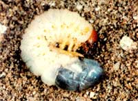
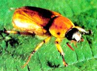
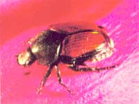

In the coming months, winter's frosty grip should gradually weaken; once again, the thoughts of gardeners will turn to preparing the soil for flower and vegetable beds. And once more we'll marvel at what miraculous stuff soil is! What appears to be mere dirt to some folks is actually an intricately balanced mixture of minerals, nutrients, and humus that's teeming with both beneficial and harmful organisms.
As plows, rotary tillers, and hoes begin to break up the soil, one of the more conspicuous inhabitants of the underground zoo, the white grub, will make its appearance. This large, plump, curled larva with its grayish white body, three pairs of legs, and reddish brown head is the immature form of the common June beetle, Phyllophaga spp. Also called the May beetle, June bug, and daw bug, this big, reddish brown, stout-bodied scarab beetle (of the family Scarabaeidae) is often seen buzzing around porch lights on early summer evenings. All told, there are about 150 species of June beetles in the United States, but most are quite similar in appearance and habit.
In late summer, each female June bug lays as many as 200 eggs in the soil. . . and from these ova hatch tiny white grubs that waste no time in beginning their mission of root destruction. The grubs spend from one to four years, depending on the particular species and the climate, foraging on roots. A two-year life cycle is common for the white grubs in the South, while a three-year cycle is more typical in northern climes. During the larval stage, the grub will overwinter in the soil for one or two years; then the insect enters a pupal phase, from which it will emerge an adult.
White grubs can be very destructive, and because their mischief occurs beneath the ground, their presence may not be suspected until after the damage is done. A wide range of plants may be attacked by the plump predators; corn, small grains, potatoes, strawberries, and onions are especially vulnerable. Small plants may become permanently stunted or may wilt and die, and if the grubs are numerous, even older plants will suffer. The adult beetles feed on the flowers and foliage of trees and shrubs, and although they're not usually as destructive as the larvae, the mature beetles are capable of causing considerable defoliation.
June beetles prefer to lay their eggs in sod that has plenty of grass and weeds growing in it. Not surprisingly, therefore, the worst infestations of white grubs occur when grassland is convened to gardens. If you're planning to raise a garden in such an area, plow or rototill the plot in the fall and then keep the soil clear of weeds by continuing to plow, till, or dig the earth periodically until planting time. This practice will remove the grubs' food supply as well as actually crush many of the larvae.
If mechanical methods of control fail to halt these ravenous pests, you'll have to resort to another grub-deterring weapon: milky spore disease. This bacterium ( Bacillus papillae), when eaten by the grub, enters the larva's bloodstream and paralyzes and kills its host. Because milky spore is a self-perpetuating disease, a single application of the bacteria will often last indefinitely. The bacterium is widely available from nurseries and seed houses (usually under the trade name Doom) because of its effectiveness on a similar pest, the Japanese beetle ( Popillia japonica ). This large, metallic blue or green scarab with coppery wings, which was accidentally imported from Japan in about 1916, is now common in most of the eastern states and is gradually spreading southward and westward, despite attempts to halt it. The larvae of the Japanese beetle are small white grubs that cause much damage to lawns, golf courses, and pastures. The adult beetles wreak considerable havoc on the fruits, foliage, and flowers of more than 200 kinds of plants.
Although the ancient Egyptians worshiped dung-rolling scarabs (and even considered stone and earthenware replicas of the beetles sacred), June and Japanese beetles are one group of insects that the modern-day gardener can well do without!
|
 Ron West As soon as you start breaking ground for your garden in the spring, you’re likely to find the white grub….a root-eating insect larva. |
 Ron West The adult form of the white grub is the June beetle. |
 Ron West The Japanese beetle is related to the June beetle, but is smaller as a grub. |